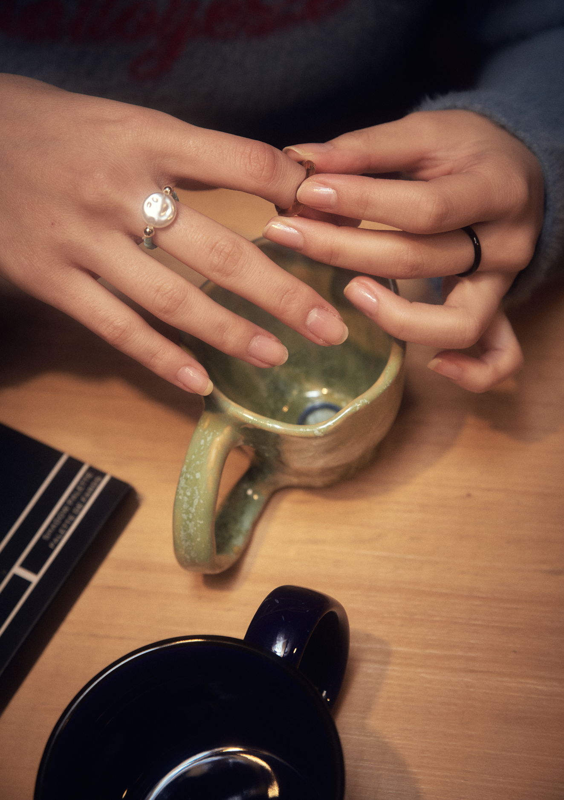
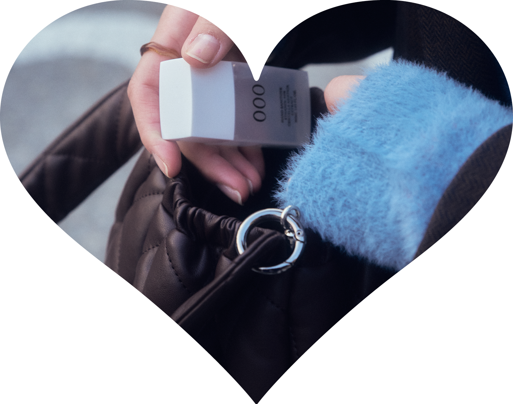
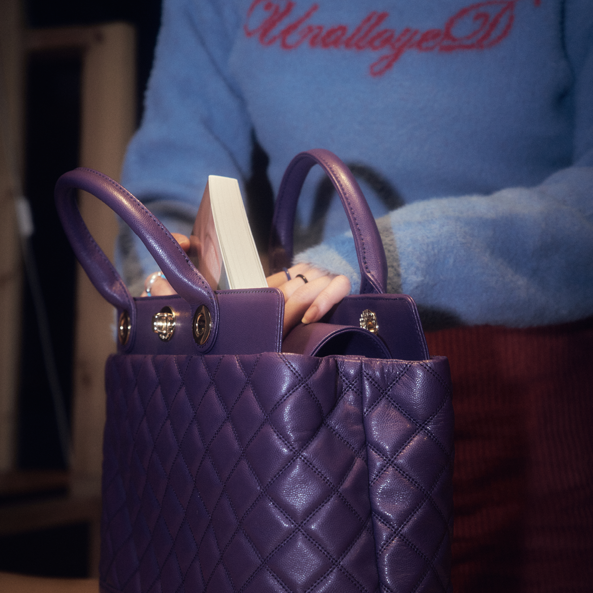
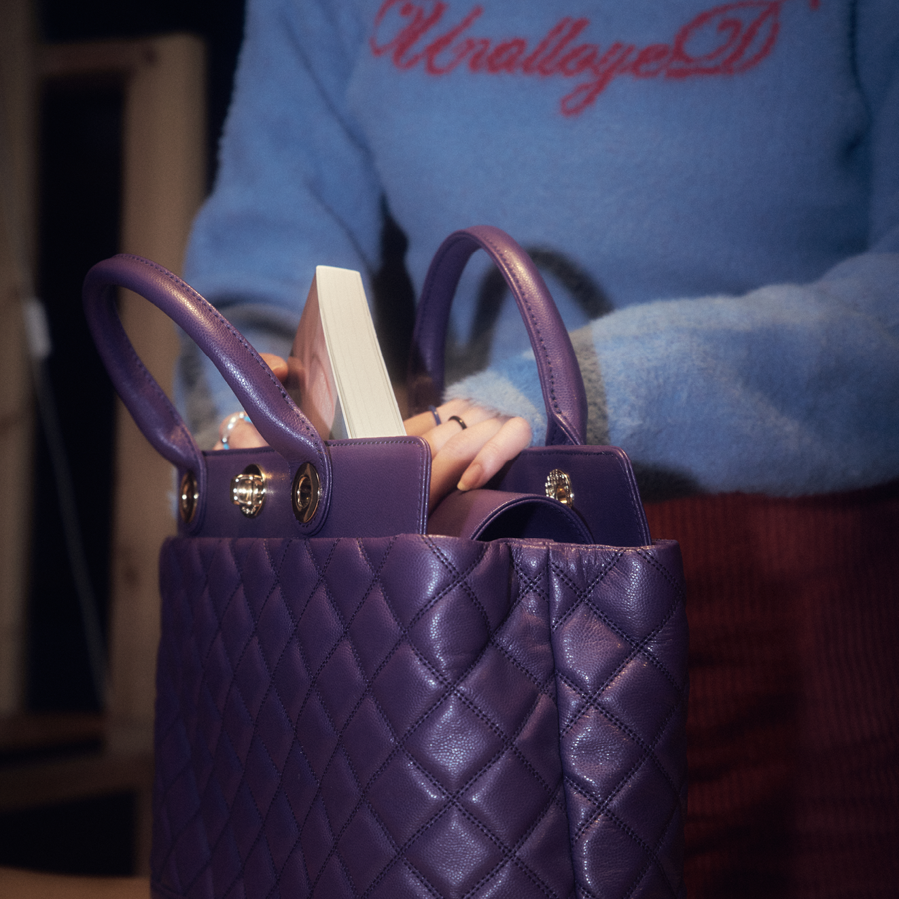
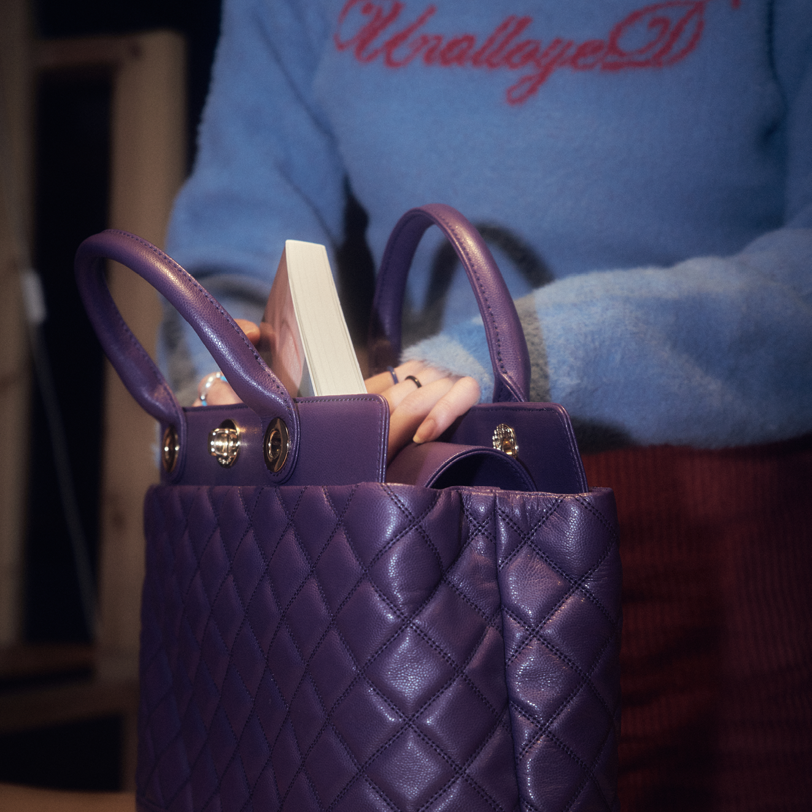

경민의 바이부라는 이름의 인스타그램 계정으로 자신의 취향이 반영된 일상을 올린다.종종 들어오는 브랜드 제품 리뷰 제의를 받아 다양한 아이템을 써본 후 자신의 방식으로 사진과 후기를 올린다. 소셜미디어는 오늘날 가장 영향력 있는 공간이지만 모두가 적극적으로 활동하진 않는다. 패션, 뷰티 분야에 관심이 많은 소비자이자 패션 잡화 제작자이기도 한 경민에게 인스타그램에서 자신의 취향과 무드를 보여주는 건 흥미롭고 중요한 문제이다. 대학교 때 “너 같은 사람은 꼭 인스타그램 해야한다“ 라는 주변의 권유에서 시작하게 된 인스타그램. 그 공간에서 경민은 어떻게 본인의 일상을 보여주고 있을까?
서촌의 한 카페에서 만난 우리는 일상을 전시하는 일과 보여지는 신체에 대해서 묻고 답하는 시간을 가졌다.
나만의 무드
만나 뵙기 전에 경민 님의 인스타그램을 살펴보았는데 첫 게시물이 2018년이더라고요. 2018년부터 시작하신 거예요? 어떤 계기로 하시게 되었나요?
대학교 1학년 때는 인스타그램을 안 했었고 그때는 주변에서도 페이스북을 더 많이 했던 것 같아요. 근데 제 친구 중 한 명이 “너 진짜 인스타그램 왜 안 하냐” “너는 꼭 해야 된다”고 계속 말하는 거예요. 처음에는 해시태그나 이런 것도 어려워 보여서 망설였는데 시작하니까 정말 재밌고 지금은 제가 가장 많이 하는 SNS가 되었죠.
어떤 점이 재미있었나요?
사람들이 일기를 쓰거나 블로그를 쓰는 것처럼 저는 그걸 그냥 인스타그램으로 남겨요. 그래서 사실 남이 보든 말든 상관없고 그냥 내가 나만의 무드를 담은 하나의 그냥 공간이라고 생각해요. 내 피드 그러니까 말 그대로 이건 내 거, 내 공간, 내가 꾸민 것들 약간 이런 느낌인 것 같아요.

일상을 전시하기
인스타그램 운영하시면서 모든 일상을 공유하는 편이신가요?
다 올리면 끝이 없으니까 소소하게 바로바로 올리는 건 스토리를 많이 활용해요. 스토리는 Q&A, 설문 등 사람들과 소통할 수 있는 방법도 다양하거든요. 조금 더 일상적인 것들을 편하게 담는 것 같아요. 반면 피드는 좀 제 취향의 것들을 아카이빙 하는 느낌이에요. 주기적으로 지난 게시물들을 둘러보고 관리하기도 해요. 그리고 게시물은 피드에 남으니까 제 취향에 맞게 색보정을 하는 편이에요. 색보정에도 제 취향이 있거든요.
그러면 인스타그램은 경민 씨의 모습을 온전히 담아내는 공간일까요 아니면 보여주고 싶은 모습을 보여주는 공간일까요?
반반인 것 같아요. 아무래도 비공개 계정도 아니고 공개 계정으로 해놓기는 하니까 불특정 다수에게 다 노출될 수 있잖아요. 제 성격과 같아요. 사람을 워낙 좋아하고 처음 본 사람과도 이야기 엄청 잘 하는데 정말 깊은 어떤 모습은 편하고 의지하는 특정 몇 명에게 보여주는 스타일이다 보니까 인스타그램도 똑같은 것 같아요. 뭔가 일정 수준 이하는 제가 혼자 생각하고 올리지 않아요.

제품 홍보와
일상 사이
피드를 보면 제품 리뷰나 홍보에도 적극적으로 참여하고 계시더라고요. 홍보 요청은 보통 DM으로 오나요?
연락이 오는 경우도 있고 아니면 브랜드에서 리뷰 체험단을 모집하는 경우도 있어요. 그래서 뷰티 브랜드에 제가 직접 신청하기도 해요. 신청하면 브랜드에서 제 인스타를 확인하고 선정되면 제품을 무료로 보내주는 대신에 리뷰를 기간 내에 어떻게 써달라고 요청이 오죠. 주로 먼저 연락이 오는 건 오히려 해외 브랜드더라고요. 작은 해외 주얼리 브랜드에서 협찬받은 적 있는데 해외 배송이라 그랬는지 제품 상태가 좋지 않았어요. 그 경험이 좋지는 않아서 이후로는 그렇게는 안 하고 있어요.
피드가 나의 취향을 보여주는 아카이브지만 제품 협찬이나 홍보가 이뤄질 때는 긴장이 생길 것 같거든요. 예를 들어 리뷰 체험단을 신청하실 때는 경민 씨의 인스타그램이 업체 마케팅 담당자에게 평가의 대상이 될 것이고, 또 경민 씨 인스타그램을 보고 제품 홍보를 요청하는 경우에는 분명 경민 씨의 인스타그램의 특정 지점을 보고 연락을 하는 거잖아요. 그럼 경험이 쌓이다 보면 인스타그램을 이런 식으로 운영하면 광고가 더 오지 않을까? 등의 고민이 생기시진 않나요?
그런 고민은 별로 안 했어요. 그냥 제 것을 그대로 솔직하게 보여주는 게 더 매력적이라 생각하고 그게 진짜 제 건데 ‘내가 마음에 들면 오케이 하고 아니면 말겠지’ 해요. 제 본업이고 그걸로 제가 생활을 해야 한다면 그럴 수도 있을 것 같은데 어쨌든 지금은 취미처럼, 조금 더 말하자면 특기 정도로 하고 있는 거니까 사실 그렇게 막 부담을 느낀 적은 없어요. 브랜드에서 연락이 오는 것도 피드가 마음에 드니까 연락을 했고 애초에 협찬을 받아도 제 색깔대로 사진을 찍고 제 무드대로 써서 올리니까요.
그럼 예를 들어 화장품이면 그 화장품이 내 피드에 잘 어울리게 찍힐 수 있는 제품인지도 되게 중요할 것 같아요.
맞아요. 뚜껑이 별로라면 뚜껑을 열고 촬영하거나 아니면 어쨌든 피드에 보이는 건 첫 번째 사진이잖아요. 그러니까 첫 번째 사진만 조금 예뻐 보이게 찍거나 하죠.
이런 활동을 적극적으로 더 하실 계획도 있으신가요? 제품 협찬뿐 아니라 광고까지도?
인플루언서가 되면 좋죠. 그걸로 돈을 벌고 그게 업이 되는 거니까요.

제품 홍보와
일상 사이
화장품과 패션 상품을 홍보하고 보여준다는 건 내 신체를 드러내는 일이기도 하잖아요. 본인의 몸을 SNS를 통해 드러내는 과정에서 스트레스나 고민이 있으신가 궁금했어요.
예전에는 무조건 굶어서 뺀 적도 있었거든요. 진짜 한 달 동안 거의 11kg을 뺐는데 하루에 사과 하나 먹고 시리얼 반 컵 먹고 그랬어요. 20대 초반에. 그런데 그래봤자 어차피 요요가 오고 건강만 안 좋아지는 거예요. 그걸 경험하면서 내가 건강한 게 중요하다는 걸 느꼈어요. 그래서 살을 빼더라도 운동하고 직접 요리해서 먹으면서 건강한 방법으로 해요.
본인이 원하는 이상적인 신체와 본인이 선호하는 스타일이 관련이 있나요?
확실히 제가 원하는 어떤 저의 체형일 때 무슨 옷을 입어도 다 편해요. 그러니까 보기에 예쁜 걸 떠나서 제가 편해요. 저는 다양한 핏의 옷들을 입고 싶은데 어떤 핏이라도 입었을 때 제가 답답하지 않고 숨쉬기도 편하고 활동하기도 편하니까 그게 몸으로 느껴져요.
보통 한 사람의 스타일이나 취향을 이야기할 때 확고한 어떤 것이라고 생각하는데 본인은 다양하고 팔색조 같은 스타일을 지향하시는 건가요?
그런 편인 것 같긴 해요. 물론 단호하게 “이건 내 스타일 아니야.”는 당연히 있는데 제품 자체를 떠나서 그걸 내가 나만의 스타일로 소화를 할 수 있다면 다 좋은 거죠. 사실 소화하기 나름이니까. 약간 제가 활용을 해서 제 것으로 다 만들려고 하는 편인 것 같아요. 옷을 볼 때도 똑같은 맥락으로 저와 어울리는 게 제일 중요한 거죠.

 
